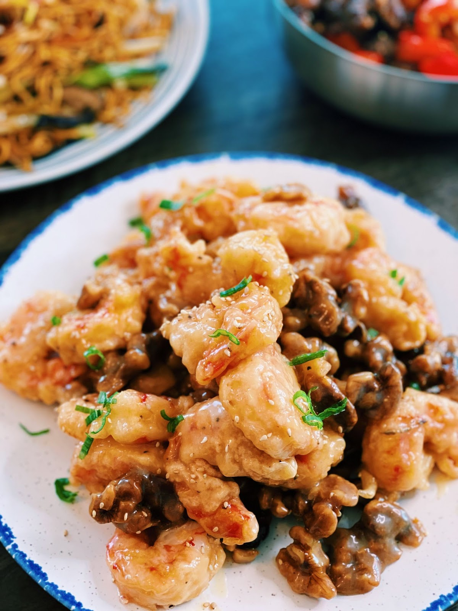

Honey Walnut Shrimp

Description
Crispy shrimp and buttery candied walnuts tossed in creamy, tangy sauce.
Ingredients
Shrimp
- 2 lbs of peeled Shrimp or Jumbo Prawns
- 1 1/2 cup of Tempura Mix
- 1/2 cup Sparkling Water
- Salt and Pepper (to taste)
Candied Walnut
- 1/2 cup Water
- 2 tbsp Butter
- 1 cup Sugar
- 1 cup of Walnuts
Sauce
- 2 tbsp Condensed Milk
- 2.5 tbsp Honey
- 3 tbsp Japanese Mayo
- 1 tsp Lemon Juice
Steps
- In a pot, add 1/2 cup of water, 2 tbsp of butter, and 1 cup of sugar. Turn the
heat up to medium-high and mix until the sugar is fully dissolved.
- Once the liquid starts boiling, add in walnuts and let it simmer for 5-10 minutes.
Remove and set aside on some parchment paper. (keep an eye out to prevent
burning, and keep stirring)
- Mix shrimp with tempura mix and 1/2 cup of COLD sparkling water in a bowl.
- Add oil to a pot and turn the heat up to medium-high. Once the oil is hot, add in the shrimp.
- Fry for 4-5 minutes or until golden brown and set aside.
- In a large bowl, mix 2 tbsp of condensed milk, 2 1/2 tbsp of honey, 3 tbsp of
Japanese mayo, and 1 tsp of lemon juice.
- Add in fried shrimp and candied walnuts and mix. Garnish with green onion and sesame seeds.